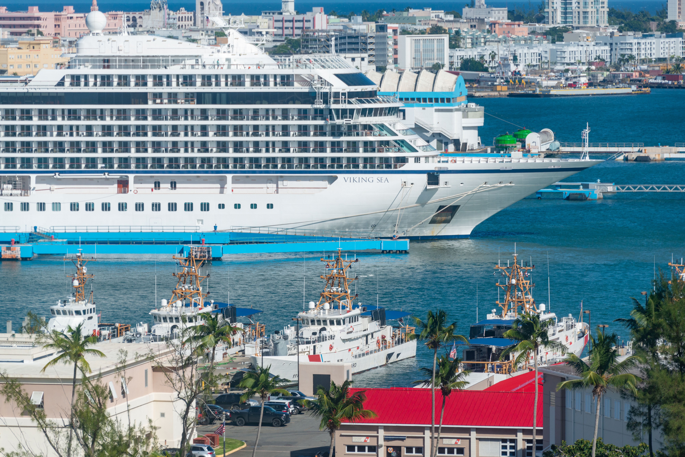

Internet en croisière : quelle eSIM choisir ?

En bref : une eSIM classique fonctionne dans les ports, pas en pleine mer. Pour avoir internet pendant la navigation, il faut le Wi-Fi du navire ou une eSIM « croisière » spécialisée qui supporte explicitement votre bateau. Et si vous ne faites rien, le roaming de votre opérateur sur le réseau maritime peut coûter de 10 à 16 € le mégaoctet. La combinaison la plus sûre pour la plupart des voyageurs : une eSIM régionale pour les escales, le mode avion et le Wi-Fi du bord (ou un forfait croisière) en mer.
Sommaire
- Quelle solution pour quel voyageur ? (réponse rapide)
- Pourquoi internet en croisière est un casse-tête
- Wi-Fi du navire, eSIM, roaming : les 4 options comparées
- Roaming en mer : la facture à éviter
- Le Wi-Fi du navire : combien ça coûte vraiment ?
- eSIM pour les escales : laquelle selon votre itinéraire ?
- Les eSIM croisière spécialisées : quand valent-elles le coup ?
- Nos eSIM recommandées
- Préparer son téléphone avant d’embarquer (6 étapes)
- Les 6 erreurs à éviter
- FAQ
1. Quelle solution pour quel voyageur ? (réponse rapide)
Il n’existe pas une seule bonne eSIM pour la croisière : tout dépend de ce que vous voulez faire en ligne et quand. Voici le résumé avant d’entrer dans le détail.
| Votre profil | Solution conseillée | Budget indicatif |
|---|---|---|
| Je veux juste mes cartes, WhatsApp et mes billets pendant les escales | eSIM régionale de 3 à 5 Go, installée avant l’embarquement | environ 14 à 19 € |
| Je veux aussi quelques messages en mer | eSIM croisière spécialisée (petit forfait) ou petit forfait Wi-Fi du navire | à partir d’environ 15 à 18 € |
| Famille avec plusieurs téléphones | une eSIM par téléphone compatible + Wi-Fi du navire réservé avant le départ | variable selon le nombre d’appareils |
| Je dois rester joignable pour le travail | Wi-Fi « streaming » du navire pour la navigation + eSIM de 10 à 20 Go pour les escales | de l’ordre de 140 $ pour 7 jours de Wi-Fi, + 28 € d’eSIM |
| Je ne veux prendre aucun risque de facture | mode avion en mer + Wi-Fi du navire + eSIM pour les ports | selon votre usage |
Les budgets d’eSIM ci-dessus viennent de notre catalogue d’offres (voir la section 6). Ceux du Wi-Fi viennent des tarifs relevés auprès des compagnies (voir la section 5).
2. Pourquoi internet en croisière est un casse-tête
Une croisière mélange trois environnements réseau très différents. C’est la source de presque toutes les mauvaises surprises.
1. À quai ou en ville (escale). Votre téléphone se connecte aux antennes locales, comme dans n’importe quelle ville du pays. Une eSIM voyage classique fonctionne parfaitement ici.
2. Près des côtes. Tant que le navire longe le littoral, le signal terrestre peut encore passer, de façon irrégulière. C’est là que les cartes et les messages fonctionnent « par moments », et que beaucoup de voyageurs se croient couverts.
3. Au large. Au-delà d’une douzaine de milles nautiques des côtes (environ 22 km, d’après Saily), le téléphone ne voit plus aucune antenne terrestre. Le navire devient son propre mini-réseau mobile, relié à un satellite. C’est ce réseau qu’on appelle réseau maritime. Votre téléphone peut s’y connecter automatiquement, et il s’affiche parfois sous des noms comme Cellular at Sea ou Maritime Communications Partner.
⚠️ Le piège : le roaming gratuit de l’Union européenne ne s’applique pas en mer. Même sur une croisière en Méditerranée, 100 % dans les eaux européennes, ce réseau est facturé hors forfait, comme une destination lointaine.
3. Wi-Fi du navire, eSIM, roaming : les 4 options comparées
| Option | Fonctionne… | Points forts | Limites |
|---|---|---|---|
| eSIM voyage classique | à quai, en ville, près des côtes | Très économique, activation immédiate, pas de roaming | Aucun réseau en pleine mer |
| eSIM croisière spécialisée | en mer et au port, sur les navires supportés | Un seul forfait, pas besoin du Wi-Fi du bord pour l’essentiel | Petites enveloppes de data, couverture à vérifier navire par navire |
| Wi-Fi du navire | partout à bord, en mer comme à quai | Fiable pour la navigation, débits en nette hausse | Prix élevé, lié au navire (inutilisable à terre) |
| Roaming de votre opérateur | en ville, à l’étranger, selon votre forfait | Rien à installer | Très risqué en mer : tarif maritime hors forfait |
En pratique, aucune option ne couvre tout. C’est pourquoi les voyageurs qui s’en sortent le mieux combinent deux solutions : une eSIM pour les escales et le Wi-Fi (ou un forfait croisière) pour la navigation.
4. Roaming en mer : la facture à éviter
C’est le risque numéro un, et il est bien réel. Voici les tarifs hors forfait relevés par JeChange dans les brochures des opérateurs au 29 septembre 2026, pour le réseau d’un navire :
| Opérateur | Internet (par Mo) | Appel passé (par minute) | Appel reçu (par minute) |
|---|---|---|---|
| Free | 9,70 € | 3 € | 2 € |
| Bouygues Telecom | 14 € | 2,90 € | 1,40 € |
| SFR | 15,84 € | 7,92 € | 3,96 € |
| Orange / Sosh | tarif non publié, communiqué par SMS à l’entrée en zone maritime |
Source : JeChange, 10 octobre 2026. Tarifs relevés pour un réseau de navire.
Pour mesurer l’ordre de grandeur : une seule photo envoyée ou une synchronisation en arrière-plan peut peser plusieurs Mo. Les opérateurs bloquent bien la connexion avant que la facture ne devienne astronomique (par exemple à 60 € chez Bouygues Telecom, soit un peu plus de 4 Mo), mais ce plafond est atteint en quelques secondes.
Le cas n’a rien de théorique : UFC-Que Choisir a rapporté l’histoire d’un abonné Sosh dont la facture mensuelle est passée de 14,90 € à 147 € après une traversée en ferry, parce que son téléphone avait basculé tout seul sur le réseau du bateau.
💡 Le réglage qui évite tout (30 secondes, à faire à quai, avant d’appareiller) :
- Désactivez les données en itinérance sur votre ligne principale.
- Passez en mode avion, puis réactivez uniquement le Wi-Fi si vous utilisez celui du navire.
- Choisissez le réseau en sélection manuelle pour empêcher la bascule automatique.
- Suspendez la sauvegarde des photos et les mises à jour automatiques.
5. Le Wi-Fi du navire : combien ça coûte vraiment ?
Le Wi-Fi du bord s’est nettement amélioré : une grande partie des flottes de MSC Croisières, de Costa et du groupe Carnival est équipée de Starlink, ce qui explique des débits bien meilleurs qu’il y a quelques années. D’après un test publié en août 2026, le forfait « Browse & Stream » de MSC affiche des débits de 10 à 30 Mbit/s, suffisants pour la visio et le streaming léger.
Reste le prix :
- Chez MSC, les tarifs ne sont pas publiés avant la réservation de la croisière. Un relevé d’août 2026 indique environ 20 $ par jour en pré-réservation contre 33 $ par jour à bord, soit de l’ordre de 140 $ pour une semaine si vous réservez avant le départ. MSC annonce elle-même jusqu’à 20 % d’économie en achetant avant l’embarquement.
- Les forfaits sont proposés par palier (navigation ou navigation + streaming) et selon le nombre d’appareils.
- Le Wi-Fi du navire ne fonctionne qu’à bord : dès que vous descendez, vous avez besoin d’autre chose.
✅ Bon réflexe : réservez le Wi-Fi avant l’embarquement depuis l’espace client de la compagnie, et ne connectez que les appareils dont vous avez vraiment besoin.
6. eSIM pour les escales : laquelle selon votre itinéraire ?
Pour les jours à quai, une eSIM voyage est de loin la solution la moins chère. Elle évite le roaming et vous donne cartes, VTC, traduction, messagerie et réservations d’excursions dès que vous posez le pied à terre.
La règle : achetez le forfait en fonction de vos ports réels, pas du nom de la région.
| Itinéraire | Type d’eSIM | À vérifier avant d’acheter |
|---|---|---|
| Méditerranée (Espagne, France, Italie, Grèce, Croatie…) | eSIM Europe | Les escales hors UE : Turquie, Tunisie, Maroc, Égypte… ne sont pas toujours incluses |
| Caraïbes | eSIM Caraïbes ou Amérique du Nord | Chaque île de votre itinéraire, pas seulement le pays de départ (notre guide Caraïbes) |
| Europe du Nord, fjords | eSIM Europe | Norvège, Islande, Royaume-Uni : confirmez qu’ils figurent dans la liste |
| Alaska | eSIM États-Unis + Canada | Les ports canadiens de l’itinéraire |
| Tour du monde, traversée | eSIM mondiale ou eSIM par pays | Les validités, qui doivent couvrir toute la durée |
Ce que coûtent les eSIM Europe (notre catalogue, octobre 2026)
Nous avons analysé les 206 offres « Europe » de 18 fournisseurs de notre catalogue. Voici les prix pour une croisière méditerranéenne type :
| Forfait Europe | Prix moyen | Prix le plus bas |
|---|---|---|
| 3 Go – 7 jours | 13,59 € | 12,40 € |
| 5 Go – 15 jours | 18,78 € | 17,21 € |
| 10 Go – 15 jours | 27,66 € | 25,63 € |
| Illimité – 7 jours | 44,13 € | 41,33 € |
Pour comparer avec le roaming en mer : un forfait de 5 Go à environ 18,78 €, c’est environ 0,004 € le Mo, soit environ 2 500 fois moins cher que le tarif maritime le moins élevé relevé plus haut (9,70 € le Mo chez Free). L’écart a une explication simple : l’eSIM ne fonctionne que sur les réseaux terrestres, le roaming maritime passe par un satellite.
💡 Combien de données ? Pour des escales d’une journée avec cartes, messagerie et quelques photos, 3 à 5 Go suffisent à la majorité des voyageurs. Prévoyez 10 Go ou plus si vous partagez la connexion ou travaillez depuis le port. Notre calculateur de données vous aide à estimer votre besoin.
⚠️ Attention aux forfaits « illimités » : ils sont pratiques à terre, mais les politiques d’usage raisonnable varient d’un fournisseur à l’autre. Vérifiez les conditions de partage de connexion avant d’acheter.
7. Les eSIM croisière spécialisées : quand valent-elles le coup ?
Une poignée de fournisseurs proposent aujourd’hui des eSIM conçues pour la mer, qui se connectent au réseau maritime du navire à des tarifs bien inférieurs au roaming.
- Saily annonce des forfaits croisière sur plus de 200 navires de plus de 25 compagnies, avec des enveloppes de 500 Mo à 10 Go et un premier prix d’environ 14,99 € pour 500 Mo sur 1 jour.
- GigSky propose des forfaits « croisière + terre » de 512 Mo (1 jour) à 10 Go (30 jours), à partir d’environ 18,49 €, sur cinq zones (Amériques/Caraïbes, Asie-Pacifique, Europe, Moyen-Orient, Monde).
Quand c’est pertinent : si vous voulez rester joignable en mer pour l’essentiel (messages, cartes, un peu de photo) sans payer le Wi-Fi du navire pour toute la semaine.
Les limites à connaître :
- Les enveloppes sont petites : 500 Mo à 10 Go, à comparer à 140 $ d’un Wi-Fi illimité pour une semaine.
- La couverture se vérifie navire par navire. Contrôlez la compagnie, le nom du navire et la zone de navigation avant d’acheter.
- Ce n’est pas fait pour la visio ni le streaming.
📌 Une eSIM « monde » ou « Europe » classique n’est pas une eSIM croisière. Si le fournisseur ne cite que des pays, considérez-la comme une solution pour les ports.
Les informations sur Saily et GigSky proviennent de leurs pages officielles et de la presse spécialisée. Ces offres évoluent, vérifiez le détail sur le site du fournisseur au moment de l’achat.
8. Nos eSIM recommandées
Pour les escales, nous recommandons des eSIM régionales avec un bon rapport données/prix et une activation simple. Voici une sélection parmi nos partenaires :
| Fournisseur | Pour qui ? | Code promo MyBestSim |
|---|---|---|
| Roamic | Voyageurs qui veulent un prix compétitif sur des forfaits régionaux et mondiaux | MYBESTSIM (-10 %) |
| Yesim | Large choix de forfaits, bonne couverture Europe | MYBESTSIM20 (-20 %) |
| Airalo | Le plus grand nombre d’offres Europe de notre catalogue (31) | MYBESTSIM (-10 %) |
| Holafly | Forfaits pensés pour les escales de croisière, avec option illimitée | MYBESTSIM (-5 %) |
| Saily et GigSky | Forfaits croisière pour garder un peu de connexion en mer | Voir le détail sur leurs sites |
Consultez nos avis détaillés et le comparateur d’eSIM pour trouver le forfait adapté à vos ports. Les codes promo sont à jour sur la page dédiée.
Comme pour chaque article, MyBestSim utilise des liens d’affiliation : nous pouvons percevoir une commission, sans frais supplémentaires pour vous. Cela ne modifie pas nos classements.
9. Préparer son téléphone avant d’embarquer (6 étapes)
Le bon moment, c’est à la maison, avec un Wi-Fi stable, pas une fois le navire parti.
- Vérifiez la compatibilité. Votre téléphone doit être compatible eSIM et débloqué. Vérifiez la liste des téléphones compatibles.
- Choisissez le forfait selon vos ports réels et vos besoins en données.
- Installez l’eSIM par QR code ou via l’application du fournisseur, avant le départ. Ne la supprimez pas ensuite : beaucoup de profils ne peuvent pas être réinstallés.
- Nommez vos lignes dans les réglages : « SIM maison », « eSIM escales ».
- Réglez les données mobiles sur l’eSIM, et coupez l’itinérance sur votre SIM principale.
- Avant d’appareiller : mode avion, puis Wi-Fi du navire si besoin. Téléchargez aussi des cartes hors ligne de vos ports.
✅ La configuration idéale doit paraître ennuyeuse : le mode avion est actif en mer, les cartes se chargent à quai, et vous ne vous demandez jamais quel réseau votre téléphone utilise.
10. Les 6 erreurs à éviter
- Croire qu’« eSIM mondiale » veut dire « fonctionne en mer ». Elle fonctionne sur les réseaux terrestres.
- Laisser l’itinérance des données activée sur la SIM principale.
- Acheter le Wi-Fi du navire à bord, au tarif le plus élevé, plutôt qu’avant le départ.
- Prendre un forfait « Méditerranée » sans vérifier les pays. La Turquie, la Tunisie ou le Maroc peuvent manquer.
- Activer l’eSIM trop tôt si la validité démarre à l’installation, et la voir expirer avant la fin du voyage.
- Laisser la sauvegarde des photos active : elle se lance dès qu’un réseau apparaît.
11. FAQ
Quelle eSIM choisir pour une croisière ? Pour les escales, une eSIM régionale (Europe, Caraïbes, Amérique du Nord…) qui couvre tous vos ports. Pour la mer, une eSIM croisière spécialisée qui liste votre navire, ou le Wi-Fi de la compagnie.
Une eSIM fonctionne-t-elle en pleine mer ? Une eSIM classique, non : elle utilise les antennes terrestres, que vous perdez au large. Seules les eSIM croisière spécialisées se connectent au réseau maritime, sur les navires qu’elles supportent.
Le roaming fonctionne-t-il sur un bateau de croisière ? Oui, mais sur le réseau maritime, facturé hors forfait. Les tarifs relevés vont de 9,70 € à 15,84 € le Mo selon l’opérateur, et le roaming européen ne s’applique pas en mer.
Combien coûte le Wi-Fi sur un bateau de croisière ? Chez MSC, par exemple, l’ordre de grandeur est d’environ 20 $ par jour en pré-réservation et 33 $ à bord pour le forfait « streaming ». Les prix varient selon la compagnie, le navire, le nombre d’appareils et la période.
Vaut-il mieux une eSIM ou le Wi-Fi du bateau ? Les deux ne servent pas au même moment. Le Wi-Fi du navire est plus pratique en navigation, l’eSIM est bien moins chère à terre et marche hors du bateau. La plupart des voyageurs combinent les deux.
Peut-on utiliser WhatsApp avec une eSIM en croisière ? Oui. Les eSIM de voyage sont généralement des forfaits de données : WhatsApp, iMessage, Google Maps ou vos e-mails fonctionnent tant que vous avez du réseau, c’est-à-dire à quai ou près de la côte.
Peut-on garder son numéro de téléphone ? Oui. Gardez votre SIM principale active pour les appels et SMS, avec l’itinérance des données désactivée, et utilisez l’eSIM uniquement pour les données.
En résumé
Pour avoir internet en croisière sans mauvaise surprise : une eSIM régionale pour les escales (de 14 à 28 € selon vos besoins), le mode avion et le Wi-Fi du bord réservé à l’avance pour la navigation, ou une eSIM croisière spécialisée si vous voulez un petit forfait en mer. Et surtout, coupez l’itinérance avant d’appareiller.
👉 Prêt à choisir ? Comparez les eSIM pour vos ports sur le comparateur MyBestSim et profitez de nos codes promo.
À lire aussi :
- Meilleure eSIM pour les navires de croisière 2026 : ce qui fonctionne
- Meilleure eSIM pour une croisière dans les Caraïbes
- Votre téléphone est-il compatible eSIM ?
Sources
- JeChange, Itinérance maritime : 10 à 16 € le mégaoctet, 10 octobre 2026 (tarifs des brochures au 29/09/2026)
- UFC-Que Choisir, Téléphoner en zone maritime : avis de tempête sur les factures
- Cruzely / Cruise Ship Tracking, Reviewed: MSC Cruise Wi-Fi Service, août 2026
- Saily, page eSIM pour croisières et presse spécialisée (Gizmodo, Kotaku, Agenda Digitale)
- Futura-Sciences, Votre eSIM GigSky spéciale croisière
- Catalogue MyBestSim : 5 056 offres de 18 fournisseurs, analyse des 206 offres Europe (octobre 2026)